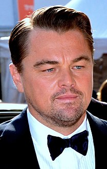
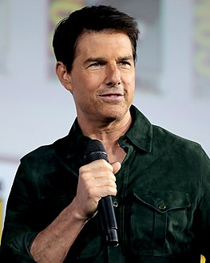
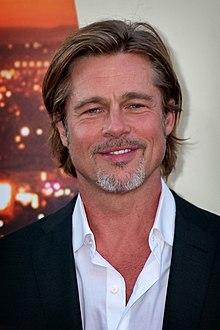
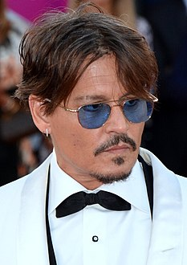
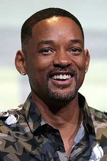

1.Leonardo Wilhelm DiCaprio
Born (November 11, 1974)
American actor and film producer, winner of the Academy Award for his role in the movie (The Revenant) in 2016, and was nominated six more times for the same award, and was nominated for four BAFTA Awards, winning one of them for his role in the movie The Revenant in 2016. He was also nominated for twelve awards. Golden Globe won three of them: Best Actor in a Drama for his performance in The Aviator in 2004, Best Actor in a Comedy or Musical for his performance in The Wolf of Wall Street in 2013, and Best Actor in a Comedy or Musical for his performance in The Wolf of Wall Street in 2013. Dramatic Actor for his performance in The Revenant in 2015. He was also nominated for many other awards, such as the Screen Actors Guild Award, and the Satellite Award
DiCaprio began his career appearing in commercials before getting supporting roles in series such as Santa Barbara and the sitcom Growing Pains in the early 1990s. DiCaprio landed his first movie role in 1991 in the science fiction movie Creatures 3. In the cinema he was in the year 1993 in the movie The Life of This Boy alongside actor Robert De Niro.Critics praised DiCaprio's talent for a supporting role in the 1993 film What Annoys Gilbert Grip, which qualified him for an Academy Award nomination for Best Supporting Actor. DiCaprio also gained more acclaim for his leading roles in The Basketball Diaries (1995) and Romeo + Juliet (1996), before he achieved international fame with James Cameron's 1997 movie Titanic, which became the highest-grossing film of the year. that time
Since the early 2000s, DiCaprio has received critical acclaim for his work in a wide variety of films including Catch Me If You Can (2002), Gangs of New York (2002), The Pilot (2004), Blood Diamonds (2006), The Departures (2006), Mass of Lies (2008), and Revolutionary Road (2008). 2008), Shutter Island (2010), The Beginning (2010), J Edgar (2011), Django Free (2012), The Great Gatsby (2013), The Wolf of Wall Street (2013), and The Return (2015), for which he won an Academy Award for Best Actor after 3 previous nominations. DiCaprio owns a production company called Appian Way Productions, whose productions include films such as The Orphan in 2009, and he is also an environmental activist.
| The most important works | year |
|---|---|
| The third part of the series "The Creatures" as Josh | 1991 |
| Movie This Boy's Life as Toby | 1993 |
| What's bothering Gilbert Grip movie | 1993 |
| The Fast and the Dead with Russell Crowe | 1995 |
| Movie Total Eclipse as Arthur Rimbaud | 1995 |
| He had two roles first as Romeo in Romeo + Juliet, and Hank in Marvin's Room | 1996 |
| Jack Dawson in Titanic | 1997 |
| Louis XIV in The Man in the Iron Mask | 1998 |
| Derek in a pear don | 2001 |
| Amsterdam Fallon Gangs of New York And Frank Abagnale in Catch Me If You Can | 2002 |
| Howard Hughes in the pilot | 2004 |
| Billy Costigan in The Departures, Danny Archer in Blood Diamonds | 2006 |
| Roger Knight in the Mass of Lies and Frank Wheeler on the Revolutionary Path | 2008 |
| Out of the oven and The Wolf of Wall Street | 2013 |
Leonardo Wilhelm DiCaprio awards
1.Academy Award for Best Actor
2.Golden Globe Award for Best Actor - Motion Picture Musical or Comedy
3.Golden Globe Award for Best Actor - Motion Picture-Drama
4.BAFTA Award for Best Actor in a Leading Role
5.MTV Movie Award for Best Performance
6.Satellite Award for Best Supporting Actor - Live Movie
7.Satellite Award for Best Cast - Live Film
8.Australian Academy of Film and Television Arts Award for Best Actor in a Leading Role
9.Silver Bear Award for Best Actor for Best Actor
10.National Board of Review Award for Best Supporting Actor
- Leonardo Wilhelm DiCaprio_IMDb
- Leonardo Wilhelm DiCaprio_Metacritic
- Leonardo Wilhelm DiCaprio_Rotten Tomatoes
- Leonardo Wilhelm DiCaprio_TV guide
2.Thomas Cruise Mapother IV(Tom Cruise)
Born (July 3, 1962)
An American film actor and producer known for his many roles in American films that gained international fame, and achieved advanced positions at the box office. He was nominated three times for an Academy Award and won three times for a Golden Globe. He is known as a committed Scientologist. He is considered one of the highest paid actors in the world. His films have grossed over $4 billion in North America and over $10.1 billion worldwide, making him among the highest-grossing box office stars of all time.
Cruz began his career in the early 1980s and his real breakthrough came with starring roles in the comedy Risky Business (1983) and the action-drama film Top Gun (1986). Critical acclaim came after he played roles in the drama films The Color of Money (1986), The Rainman (1988), and Born on the Fourth of July (1989). In the latter film, he played the character of Private Ron Kovik, and won the Golden Globe Award for Best Actor - Motion Picture Drama, and was nominated for the Academy Award for Best Actor. As a Hollywood star in the '90s,Cruz has starred in several successful films such as the drama Little Good Men (1992), the thriller The Company (1993), the horror film Interview with the Vampire (1994), and the romance Jerry Maguire (1996). For his role in the latter film, he won a Golden Globe Award for Best Actor - Motion Picture Musical or Comedy and was nominated for an Oscar for the second time.
His role in the drama film Magnolia (1999) won him a Golden Globe for Best Supporting Actor - Motion Picture, and was nominated for an Academy Award for Best Supporting Actor, for his role in the film as a motivational speaker. As an action star, Cruise played Ethan Hunt in the Mission: Impossible series of films. He has also had starring roles in science fiction and action films such as: Vanilla Sky (2001), Minority Report (2002), The Last Samurai (2003), Collateral (2004), War of the Worlds (2005), Knight and Day (2010), and Jack Reacher (2012). Oblivion (2013), Edge of Tomorrow (2014), The Mummy (2017)
Cruz has been married 3 times to Mimi Rogers, Nicole Kidman, and Kitty Holmes. He has 3 sons, two of whom were adopted when he was married to Kidman and a biological daughter by Holmes. Cruz is an outspoken advocate of the Church of Scientology and its associated social programs, which he credits with helping him overcome dyslexia. In the 2000s, he sparked controversy for his church-related criticism of psychiatry and antidepressants, his efforts to promote Scientology as a religion in Europe, and a leaked video of him promoting Scientology in an interview.
| The most important works | year |
|---|---|
| Risky Business | 1983 |
| Born on the Fourth of July | 1989 |
| Days of Thunde | 1990 |
| Little Good Men | 1992 |
| Magnolia Frank | 1999 |
| Mission: Impossible 2 | 2000 |
| Vanilla Sky by David Ames | 2001 |
| John Anderton | 2002 |
| The Last Samurai | 2003 |
| tropical thunder | 2008 |
| Mission Impossible: A Splinter Nation | 2015 |
| Mission Impossible: Fallout | 2018 |
Thomas Cruise Mapother awards
1.Best Lead Actor in 1990, for Born on the Fourth of July.
2.Best Lead Actor in 1997 for Jerry Maguire
3.Best Supporting Actor in 2000 for Magnolia.
4.Best Actor in a Comedy or Show in 1984 for the movie Risky Business
5.1990 Best Actor for a Movie Born on the Fourth of July won it
6.Best Actor in 1993 for A Few Good Men
7.Best Actor, Comedy or Show, in 1997, for Jerry Maguire, which he won.
8.2000 Best Supporting Actor for Magnolia, won
9.Best Actor 2004 for The Last Samurai. Best Supporting Actor in 2009 for Tropical Thunder.
3.Brad Pitt
Born (December 18, 1963)
American actor and film producer. He was born William Bradley Pitt in Oklahoma, United States, and raised in Missouri. He acted in several films, including the movie Fight Club in 1999, the theft movie Ocean 11 in 2001, its second part in 2004, its third part in 2007, Troy in 2004, and Babel in 2006. In 2005 he acted With Angelina Jolie in Mr. and Mrs. Smith.
Pete's fame came after playing a rambling cowboy in the 1991 road movie Thelma and Louise. He played major roles in big-budget films such as the drama The River Runs Through It in 1992 and Legends of Autumn in 1994, as well as the horror film Interview with the Vampire in 1994. He won critical acclaim with his performances in the 1995 crime thriller Seven and the science fiction film 12 Monkeys. For his role in the second film, he won a Golden Globe Award for Best Supporting Actor in a Motion Picture and was nominated for an Oscar.
Pete was nominated for an Academy Award for his role in Benjamin Button's The Baffling Case in 2009 and for his role in Moneyball in 2012. Pete's greatest commercial success came with a host of films including Zombie World War in 2013 and Once Upon a Time in Hollywood in 2019, in which he won his second Golden Globe Award and the Academy Award for Best Supporting Actor. Pete has produced The Departed (2006) and Twelve Years Slave (2013), both award-winning filmsThe Oscar for Best Picture. He also produced The Tree of Life (2011), Moneyball (2011) and The Great Deficit (2015), all of which were nominated for an Academy Award for Best Picture. Pete is the second actor to win Oscars for Best Supporting Actor and Best Picture.
As a public figure, Pitt is considered one of the most powerful and influential people in the American entertainment industry. He has also been considered the most attractive man in the world by various media for many years and his personal life is the subject of widespread publicity. Pitt is the ex-wife of actress Jennifer Aniston, and he had an affair with Angelina Jolie and married her, and they separated after two years of marriage. He has 3 children with her, and she adopts 3 other children with her. Pete co-founded production company Plan B Entertainment
| The most important works | year |
|---|---|
| Hunk,No Man's Lan,Less Than Zero | 1987 |
| The Dark Side of the Sun | 1988 |
| Legends of the Fall | 1994 |
| 12 monkeys | 1995 |
| Fight Club | 1999 |
| Snatch | 2000 |
| Babel | 2006 |
| Burn After Reading ,The Curious Case of Benjamin Button | 2008 |
| Inglourious Basterds | 2009 |
| Moneyball | 2011 |
| allies | 2016 |
| Once upon a time on Hollywood | 2019 |
Brad Pitt awards
1.Best Lead Actor 2009 for The Curious Case of Benjamin Button. (nominate only)
2.Best Supporting Actor in 1995 for Twelve Monkeys. (nominate only)
3.Best Leading Actor 2012 for Money Ball. (nominate only)
4.Best Supporting Actor in 2020 for the movie (once upon a time in hollywood) and won it
5.Best Supporting Actor in 2019 for his role in Once Upon a Time ... in Hollywood
6.Best Actor in 2009 for his role in The Curious Case of Benjamin Button. (nominate only)
7.Best Actor in 2007 for his role in Babel. (nominate only)
8.Best Actor in 1996 for his role in Twelve Monkeys. (won it)
9.Best Actor in 1995 for his role in Legends of the Fall. (nominate only)
4.John Christopher Depp II
Born (June 9, 1963)
He is a film director, film producer, restaurateur, voice actor, brewer, and world-class American guitarist. He was nominated for ten Golden Globe Awards, and won Best Actor for his starring role in Sweeney Todd: The Demon Barber of Fleet Street) and was nominated for three Academy Awards for Best Actor. His first appearance was in the movie (A Nightmare on Elm Street) in 1984, and he achieved wide fame during his participation in the TV series (21 Jump Street) that aired between 1987-1990. He also participated in the war movie (Platoon) in 1986 with director Oliver Stone. He also participated in the Romanian fantasy movie (Edward Scissorhands) in 1990
Depp is considered one of the biggest movie stars in the world. He is the tenth highest-paid actor worldwide, with Depp's films grossing over US$3.7 billion at the US box office and over US$10 billion worldwide. He was listed in the Guinness Book of Records for the year 2012 as the highest paid actor in the world, with earnings of $75 million. Depp has collaborated in eight films with director, producer and friend Tim Burton. He was named Person of the Year 2015 on Disney Legends. In addition to his work as an actor, Depp has also worked as a musician. He played with many bands, including the major rock band known as Hollywood Vampires along with Alice Cooper and Joe Perry.
| The most important works | year |
|---|---|
| Nightmare on Elm Street | 1984 |
| Private Resort | 1985 |
| Platoon | 1986 |
| Edward Scissorhands | 1990 |
| What's Eating Gilbert Grape | 1993 |
| Nick of Time | 1995 |
| Donnie Brasco | 1997 |
| The Man Who Cried | 2000 |
| Pirates of the Caribbean: The Curse of the Black Pearl | 2003 |
| Charlie and the Chocolate Factory | 2005 |
| Pirates of the Caribbean: Dead Man's Chest | 2006 |
| Pirates of the Caribbean: At World's End | 2007 |
| Alice in Wonderland | 2010 |
| Pirates of the Caribbean: Dead Men Tell No Tales Tides | 2017 |
John Christopher Depp awards
1.Best Leading Actor in 2004 for Pirates of the Caribbean: The Curse of the Black Pearl
2.Best Leading Actor 2005 for Finding Eternal Land
3.Best Leading Actor 2008 for Sweeney Todd: The Devil's Barber of Fleet Street
4.Best Actor, Comedy or Show, 1991, for "Edward with Scissors Hands"
5.Best Actor, Comedy or Show, 1994, for "Benny John"
6.Best Actor, Comedy or Show, 1995, for Ed Wood
7.Best Actor, Comedy or Show, 2004 - Pirates of the Caribbean: The Curse of the Black Pearl
8.Best Drama Actor 2005 for Finding Neverland
9.Best Actor, Comedy or Show in 2006, for Charlie and the Chocolate Factory 2007
10.Best Actor, Comedy or Show, for Pirates of the Caribbean: Dead Man's Chest (film)
- John Christopher Depp_IMDb
- John Christopher Depp_Metacritic
- John Christopher Depp_Rotten Tomatoes
- John Christopher Depp_TV guide
5.Willard Carroll Smith Jr
Born (September 25, 1968)
He is an American Actor, Rapper, Film Producer, Song Producer, and Writer born on September 25, 1968. He has enjoyed success in television, films, and songs. In 2007, Newsweek named him one of the most influential actors in Hollywood. He was nominated for four Golden Globe Awards, two Academy Awards, and won four Grammy Awards.
In the late 1980's, Will Smith achieved modest fame as a rapper under the name "Prince Vital". In 1990, his popularity increased dramatically when he appeared in the popular television series The Prince of Bel-Air Live. The show lasted for about six years on the American channel "NBC", and spread constantly on different channels. In the mid-1990s, Will transitioned from television shows to films. Ultimately, he starred in several blockbuster films. He is the only actor to have acted in 8 films in a row, which grossed over $100 million at the box office.
Four fantasy films in which Will star has grossed over $500 million at the global box office. As of 2011, his films have grossed $5.7 billion at the global box office. Smith received Academy Award nominations for Best Actor for playing boxer Muhammad Ali in Ali (2001), and Chris Gardner in Hunting for Happiness (2006).
| The most important works | year |
|---|---|
| The Six Degrees of Separation | 1993 |
| Bad Boys | 1995 |
| Wild West | 1999 |
| I Am Legend | 2007 |
| Men in black suits 3. | 2012 |
| after Earth | 2013 |
| Hancock | 2008 |
| suicide squad | 2016 |
| side beauty | 2016 |
| Aladdin | 2019 |
| Naughty boys forever | 2020 |
Willard Carroll Smith achievements
1.Will Smith discography Big Willie Style (1997)
2.Wellenium (1999)
3.Born to Rain (2002)
4.Lost and Found (2005)
5.Rock the House (1987)
6.Best Actor, Comedy or Show, 1995, for Ed Wood
7.Hey Is The DJ, I Am The Rapper (1988)
8.And This Corner... (1989)
9.Home Base (1991)
- Willard Carroll Smith_IMDb
- Willard Carroll Smith_Metacritic
- Willard Carroll Smith_Rotten Tomatoes
- Willard Carroll Smith_TV guide
6.Thomas Jeffrey Hanks

Born (July 9, 1956)
He is an American actor and director. Hanks is best known for his comedic and dramatic roles in films such as Splash (1984), Bachelor Party (1984), Big (1988), Turner & Huch (1989), A League of Their Own (1992), The Watcher in Seattle (1993), and Forrest Gump (1994) , Apollo 13 (1995), You Have the Mail (1998), The Green Mile (1999), The Outcast (2000), The Road to Doom (2002), Charlie Wilson's War (2007), Cloud Atlas (2012), Captain Phillips (2013), Saving Mr. Banks (2013), Sully (2016), A Beautiful Day in the Neighborhood (2019), and News of the World (2020). He has also starred in the Robert Langdon films, and has voiced Sheriff Woody in the Toy Story series (1995–present). Tom Hanks is one of the most famous and popular movie stars worldwide, and widely regarded as an American cultural icon.
Hanks has collaborated with film director Steven Spielberg on five films to date: Saving Private Ryan (1998), Catch Me If You Can (2002), The Terminal (2004), Bridge of Spies (2015), and The Post (2017), as well as the miniseries Band of Brothers (2001), which launched Hanks as a successful director, producer, and screenwriter. In 2010, Spielberg and Tom Hanks were executive directors on the HBO miniseries The Quiet.
Tom Hanks films have grossed $4.9 billion or more at the box office in the United States and Canada, and more than $9.96 billion worldwide, making him the fourth highest-grossing actor in North America. His accolades include the Golden Globe Award 4 times, the Academy Award 2 times out of 6 nominations; The first for his role as a gay lawyer suffering from AIDS in Philadelphia (1993) and the second for his role in Forrest Gump (1994) (Hanks is one of only two actors to receive an Academy Award for Best Actor in two consecutive years, the other being Spencer Tracy), and a Guild Award Screen Actors twice, People's Choice Awards 8 times; Including about his role in ForrestGump (1994), and a 7-time Primetime Emmy Award for his work as a producer on several television series and films such as From Earth to Moon, League of Brothers, John Adams, and The Tranquil. In 2002, he was awarded the American Film Institute Lifetime Achievement Award. In 2004, he received the Stanley Kubrick Britannia Award for Excellence in Film from the British Academy of Film and Television Arts (BAFTA). In 2013, he was nominated for a Tony Award for Best Actor in a Play for his performance in Nora Avron's play Lucky Man. In 2014, he received honors from the Kennedy Cultural Center, and in 2016 he received the Presidential Medal of Freedom from former United States President Barack Obama, as well as the French Legion of Honor. In 2020, he was awarded a Golden Globe by Cecil B. DeMille.
| The most important works | year |
|---|---|
| Volunteers | 1985 |
| He Knows You're Alone | 1980 |
| Bachelor Party | 1984 |
| Splash | 1984 |
| The Bonfire of the Vanities | 1990 |
| Forrest Gump | 1994 |
| The Green Mile | 1999 |
| Cast Away | 2000 |
| Catch Me if You Can | 2002 |
| The Polar Express | 2004 |
| The Da Vinci Code | 2006 |
| Extremely Loud and Incredibly Close | 2011 |
| Captain Phillips | 2013 |
| Nice day in the neighborhood | 2019 |
Thomas Jeffrey Hanks awards
1.Best Leading Actor in 1989 for a Big Movie
2.Best Lead Actor in 1994 for Philadelphia, which he won
3.Best Lead Actor in 1995 for Forrest Gump, which he won
4.Best Lead Actor in 1999 for Saving Private Ryan
5.Best Leading Actor in 2001 for Outcast
6.Best Supporting Actor in 2020 for A Beautiful Day in the Neighborhood
7.Best Actor in a Comedy or Show in 1989 for a Major Movie, which won it
8.Best Actor, Comedy or Show, 1994, for "The Watcher in Seattle"
9.Best Actor in a Motion Picture Drama, 1994 for Philadelphia, which he won
10.Best Actor in a Motion Picture-Drama in 1995 for Forrest Gump, which he won
- Thomas Jeffrey Hanks_IMDb
- Thomas Jeffrey Hanks_Metacritic
- Thomas Jeffrey Hanks_Rotten Tomatoes
- Thomas Jeffrey Hanks_TV guide
7.Robert Downey Jr

Born (April 4, 1965)
American actor and producer. Nominated for two Oscars, won three Golden Globes and many other awards and nominations. He appeared in many films, including Chaplin, Natural Killers, and Zodiac. He is known for portraying Tony Stark / Iron Man in the Iron Man films and The Avengers and their sequels that devour, as well as a major role in Sherlock Holmes. Robert Downey Jr. is one of the highest paid actors in Hollywood.
He was born in 1965 and began his artistic career when he was five years old, Robert's family was interested in art, and this led him to study acting at a training center in New York before he moved to live with his father in California and his parents divorced in 1978, and in 1982 Robert left the study and dedicated his acting life. With his participation in the movie Pound in 1970, which was written and directed by his father, and since this early role, Robert has been able to participate in a group of enviable films over four decades. early, and this addiction has caused him a lot of problems for decades
| The most important works | year |
|---|---|
| Strange Science | 1985 |
| Back to School | 1986 |
| The pick-up artist,Less Than Zero | 1987 |
| Johnny Be Good | 1988 |
| Air America | 1990 |
| Only You | 1994 |
| Restoration | 1995 |
| Iron Man,Tropical Thunder | 2008 |
| Sherlock Holmes | 2009 |
| Iron Man 2 ,Due Date | 2010 |
| Sherlock Holmes: A Game of Shadows | 2011 |
| The Avengers | 2012 |
| Iron Man 3 | 2013 |
| Avengers: Age of Ultron | 2015 |
| Captain America: Civil War | 2016 |
| Spider-Man: Homecoming | 2017 |
| Avengers: Infinity War | 2018 |
| Avengers: Endgame | 2019 |
| Dr. Doolittle's Travel Journey | 2019 |
Robert Downey awards
1.Best Lead Actor 1992 for Chaplin.
2.Best Supporting Actor in 2009 for Tropical Thunder.
3.Best Lead Actor 1992 for Chaplin
4.Best Supporting Actor in a Series, Miniseries, or TV Movie in 2001 for Ally McBeal, which he won
5.Best Supporting Actor 2009 for Tropic Thunder
6.Best Actor in a Motion Picture Musical or Comedy 2010 for "Sherlock Holmes" won it
- Robert Downey Jr_IMDb
- Robert Downey Jr_Metacritic
- Robert Downey Jr_Rotten Tomatoes
- Robert Downey Jr_TV guide
8.Zachary David Alexander Efron

Born (October 18, 1987)
Efron began his career appearing in commercials before getting minor roles in series such as Firefly and the sitcom The Guardian in the early 2000s. Efron landed his first movie role in 2006 in the Disney Channel musical "High School Musical", which He won an Emmy Award and gained immense popularity among Disney Channel films, but his first major appearance in cinema was in 2007 in the musical film Hairspray, produced by "New Line Cinema" alongside actor John Travolta. Critics praised Efron's talent for a supporting role in 2009's 17 Again, which qualified him for an MTV Movie Award nominationBest Actor. Efron also gained more acclaim for his leading roles in Anna and Orson Welles in 2009, Charlie St. Claude in 2010, New Year's Eve in 2011, Newsboy in 2012, Parkland in 2013, and That Awkward Moment in 2014 , before achieving international fame through Nicholas Stoller’s “Neighbors” in 2014, the film that became the highest-grossing film until recently. In 2015, Efron was nominated for several awards for his lead role in the movie We Are Your Friends, and since the beginning of 2016, Efron has been nominated for several awards for his various lead roles in films such as Dirty Grandpa, Neighbors 2: Rise of the Girls' Club, and Mike and Dave Need Wedding Dates.
| The most important works | year |
|---|---|
| The famous Disney series "High School Musical" | 2006,2007,2008 |
| robbery series | 2007 |
| Film Music Hairspray | 2007 |
| 17 again | 2009 |
| charlie st cloud movie | 2010 |
| New Year's Eve | 2011 |
| 3D animated movie called Lorax | 2012 |
| Newsboy movie,movie at any cost | 2012 |
| A feature film called Parkland | 2013 |
| Romantic Comedy That Embarrassing Moment,For the comedy movie Jeeran | 2014 |
| Feature Film We Are Your Friends | 2015 |
| Comedy Dirty Grandpa | 2016 |
| The comedy movie Jeeran 2 | 2016 |
| Comedy movie Mike and Dave need wedding dates | 2016 |
| A feature film called The Masterpiece | 2017 |
| Comedy Baywatch | 2017 |
Zachary David Alexander Efron awards
1.2006 "Teen Choice Award"
2.2006 "Bravo Magazine"
3.2007 Young Hollywood Awards
4.2007 Teen Choice Award
5.2007 Nickelodeon Kids' Choice Award
6.2007 Nickelodeon Kids' Choice Award
7.2007 Hollywood Film Festival Awards
8.2007 "TV Money Awards"
9.2007 "Bravo Magazine"
10.2008 "Critics' Choice Movie Award"
- Zachary David Alexander Efron_IMDb
- Zachary David Alexander Efron_Metacritic
- Zachary David Alexander Efron_Rotten Tomatoes
- Zachary David Alexander Efron_TV guide
9.Al Pacino

Born (April 25, 1940)
American Actor, Producer, Director, and Author. His career spanned more than five decades in which he received many awards and honors for his acting performance; Among the Oscar Award, two awards of Tony Awards, Amy Awards and the British Academy Award, four Golden Globe Awards, World Theater Award, Award for Lifetime Achievements from the American Film Institute, and the Golden Globe Cecilb Domel Award. The Pacinos were raised in New York City; One of the most important cities for culture, arts and media industry in the world;Of Italian-American parents, of Italian descent from the Italian island of Sicily. He admired cinema at an early age and loved theatre. He is considered one of the best actors in the history of American cinema. He's also one of the few actors to have won an Oscar, an Emmy, and a Tony award together; Which is described as the "Triple Crown of Representation".
A methodical actor and former student at Herbert Bergoff and the Actors Studio, where he was tutored by Charles Laughton and Lee Strasberg, Pacino made his film debut at the age of 29 in a supporting role in Me, Natalie (1969). He drew attention for his first major role as a heroin addict in The Punk in Needle Park (1971). He then gained widespread recognition for his famed role as Michael Corleone in Francis Ford Coppola's The Godfather (1972), for which he was nominated for an Academy Award for the first time. Then he continued to present the role in the following two parts: The Godfather: Part Two (1974) and The Godfather: Part Three (1990). His performance as Corleone is considered one of the greatest in the history of cinema.
Pacino was nominated for the Academy Award for Best Actor for the films Serpico (1973), The Godfather: Part Two, A Sultry Day Era (1975), and...Justice for All (1979), ultimately winning it for his role as a blind old army man in Perfume of a Woman ( 1992). He earned Academy Award nominations for Best Supporting Actor for his roles in The Godfather, Dick Tracy (1990), Glenary Glen Ross (The Glen Ross Hat) (1992) and The Irishman (2019). Among his other notable roles are Tony Montana in The Scarred Face (1983), Carlito Brigante in Carlitos Way (Carlito's Road) (1993), Benjamin Ruggiero in Donny Brasco (1997), and Lowell Bergman in The Insider (1999). He has also starred in the following thriller films: Heat (1995), Devil's Advocate (1997), and Insomnia (2002), as well as appearing in the comedy-drama film Once Upon a Time in Hollywood (2019).
| The most important works | year |
|---|---|
| 'Me, Natalie' | 1996 |
| 'The Panic in Needle Park' | 1971 |
| 'The Godfather' | 1972 |
| 'Scarecrow','Serpico' | 1973 |
| The Godfather Part II' | 1974 |
| 'Cruising' | 1980 |
| Scarface' | 1983 |
| 'Sea of Love' | 1989 |
| 'Dick Tracy', 'The Godfather Part III' | 1990 |
| 'Glengarry Glen Ross',Scent of a Woman' | 1992 |
| 'Carlito's Way' | 1993 |
| 'The Insider' | 1999 |
| 'Angels in America' | 2003 |
| ?Salomaybe' | 2009 |
| 'You Don't Know Jack' | 2010 |
| 'Imagine' | 2015 |
| The Irishman | 2019 |
Al Pacino awards
1.Academy Award for Best Actor
2.BAFTA Award for Best Actor in a Leading Role
3.BAFTA Award for Best Actor in a Leading Role
4.Golden Globe Award for Best Actor - Miniseries or TV Movie
5.American Film Institute (AFI) Lifetime Achievement Award
6.Honorees from the Kennedy Cultural Center (2010s)
7.Primetime Emmy Award for Outstanding Lead Actor in a Miniseries or Movie
8.Cecil B. DeMille Prize
9.Satellite Award for Best Actor - Miniseries or Television Film
10.National Board of Review Award for Best Actor
10.Nicolas Cage

Born (June 7, 1952)
He is an American actor, director, producer, and screenwriter, recipient of the Academy Award for Film Arts. He began his artistic career in 1980. He has also worked in production and directing, and has several films that he wrote himself. He won an Academy Award for Best Actor in 1996 for Leaving Las Vegas, as well as a Golden Globe and Screen Actors Guild Award for the same role. He starred as Charlie and Donald Kaufman in the film adaptation for his second Oscar nomination.
Cage had a major role in several films early in his career, including: Rumble Fish, Valley Girl, Race with the Moon, Birdie, Peggy Sue's Marriage, Racing Arizona, Moon Tight, Vampire Kiss, Wild at Heart, Honeymoon in Vegas, Red Rock West . Listed by Screen Scientist John Willis, vol. 36 as one of the twelve most promising new actors of 1984 during that time.
After winning the Academy Award, Cage starred in several notable films, including: The Rock, Face/Off, Con Air, City of Angels, Gone in Sixty Seconds, Adoption, National Treasure, King of War, Ghost Rider, and National Treasure: Book of Secrets and Knowledge. He also directed the Sony film, for which it was nominated for the Special Grand Prix at the Deauville Film Festival. Cage owns the production company Saturn Films, through which he has produced films such as The Vampire Phantom and The Life of David Gale. In October 1997, Nicolas Cage was ranked 40th on Empire magazine's list of the 100 Greatest Movie Stars of All Time, while the following year, he ranked 37th on Premiere magazine's list of the 100 Most Powerful People in Hollywood.
In the 2010s, he starred in Kick-Ace, The Croods, Joe, Dog Eats a Dog, Mom and Dad, Mandy, Spider-Man: Into the Spider-Verse, and Lone Out of Space. As a result of his participation in different genres of films at that time, his popularity increased and he gained a group of fans.
| The most important works | year |
|---|---|
| The Best of Times | 1981 |
| Valley Girl,Rumble Fish | 1983 |
| Race with the Moon,The Cotton Club,Birdie | 1984 |
| Vampire Kiss,Tempo de Aquider | 1989 |
| Firebirds,Industrial Symphony No. 1,Wild at Heart,Zan Daly | 1990 |
| Red Rock West,Jarding Ts ,It could happen to you ,Trapped in Heaven | 1994 |
| 8mm,Showing the Dead | 1999 |
| Wind Talkers ,Adopt,Sony | 2002 |
| The Bad Boy,The Boughman ,World Trade Center | 2006 |
| Bangkok in Danger,Roman Polanski: Wanted and Desired | 2008 |
| Kick-Ace,Magician Boy | 2010 |
| Season of the Witch ,Angry Engine,Sin,Seeking Justice | 2011 |
| Ghost Driver: Spirit of Vengeance,Stolen | 2012 |
| Runner,Ghost Push | 2015 |
| USS Indianapolis: Men of Courage ,Snowden,Army of One | 2016 |
| 211 ,Mandy | 2018 |
| The Croods 2 | 2020 |
Nicolas Cage awards
1.Best Actor (For: Leaving Las Vegas) (1996)
2.Golden Globe Award for Best Actor - Motion Picture-Drama (For: Leaving Las Vegas) (1996)
3.MTV Movie Award for Best On-Screen Duo (For: The Rock) (1997)
4.Toronto Film Critics Association Award for Best Actor (Action: Adoption) (2002)
5.National Board of Review Award for Best Actor (For: Leaving Las Vegas) (1995)
6.MTV Movie Award for Best On-Screen Duo (For: The Disgraced Face) (1998)
7.American National Society of Film Critics Award for Best Actor (For: Leaving Las Vegas) (1995)
8.Toronto Film Critics Association Award for Best Actor (For Bad Lieutenant, Port of Call - New Orleans) (2009)
9.New York Film Critics Circle Award for Best Actor (For: Leaving Las Vegas) (1995)
10.Screen Actors Guild Award for Outstanding Performance by an Actor in a Leading Role (For: Leaving Las Vegas) (1996)
Los Angeles Film Critics Association Award for Best Actor (For: Leaving Las Vegas) (1995)
11.Dwayne Douglas Johnson

Born (May 2, 1972)
He is an American-Canadian actor, film producer, entrepreneur, investor, and retired professional wrestler. Johnson was a professional wrestler for the World Wrestling Federation (WWE (and now WWE) for eight years before pursuing his acting career. His films have grossed over $3.5 billion in North America, and over $10.5 billion worldwide, making Johnson one of the highest-grossing box office stars of all time. Johnson was also a former American football and Canadian football player.
Johnson was a college football player for the University of Miami, with whom he won a national championship in 1991. Initially aspiring to a professional football career, Johnson entered the 1995 NFL Draft, but did not design. As a result, Johnson signed with the Calgary Stampeders in the Canadian Football League (CFL), but was removed from the team in the middle of his first season. Soon, he started training as a professional wrestler.
In 1996, Johnson was awarded a contract with the World Wrestling Federation, and was promoted as the first third-generation wrestler in the company's history, as he is the son of Rocky Johnson, and grandson of Peter Maivia. He rose to prominence after developing a charismatic personality for a ostentatious wrestler named "The Rock". He subsequently won his first WWE Championship in 1998, helping him usher in the "Attitude Era", a boom in the company's business in the 1990s and early 2000s, which still holds professional wrestling records for television ratings. In 2004, he left WWE to pursue his acting career, went on a seven-year hiatus, and returned in 2011 as a part-time performer until 2013, appearing sporadically before retiring fully in 2019
Regarded as one of the greatest professional wrestlers, and biggest raffles of all time, The Rock topped the newest and most popular pro wrestling push-up event of all time, WrestleMania 28, and featured on WWE's most-watched television series, along with WWE Raw and WWE E Smackdown. He has won many titles, being a two-time WWE Intercontinental Champion, five-time World Tag Team Championship, and ten-time World Tag Team Champion. He was also the winner of the Royal Rumble match, and the sixth WWE Champion for the Triple Crown.
Johnson has also had success as an author and producer. In 2000, he released his autobiography, The Rock Says..., which debuted at number one on the New York Times bestseller list. In 2012, he founded the entertainment production company Seven Pax Productions, which has since produced several films and entertainment projects. Ranked among the 100 most influential people in the world in both 2016 and 2019, Johnson was ranked among the world's top actors.
| The most important works | year |
|---|---|
| scorpion king | 2002 |
| game plan | 2007 |
| teeth reap | 2010 |
| Journey 2: Mysterious Island | 2012 |
| Hercules | 2014 |
| San Andreas | 2015 |
| Central Intelligence,Moana | 2016 |
| Rampage,Skyscraper | 2018 |
| Furious movie series, where he began appearing in this series starting from Fifth Speed | 2011 |
| Fast and Furious 6 | 2013 |
| Fast and Furious 7 | 2015 |
| Fast and Furious 8 | 2017 |
| Hobbs and Shaw | 2019 |
| Jumanji: Welcome to the Jungle | 2017 |
| Jumanji: The Next Level | 2019 |
Dwayne Douglas Johnson Championships
1.8 WWE Championships, and was named People's Champion.
2.8 times heavyweight champion. Two WWE Intercontinental Championships.
3.5 World Tag Team Championships in WWE. 2000 Royal Rumble Championship
4.Two World Heavyweight Championships, WCW.
5.National Board of Review Award for Best Actor (For: Leaving Las Vegas) (1995)